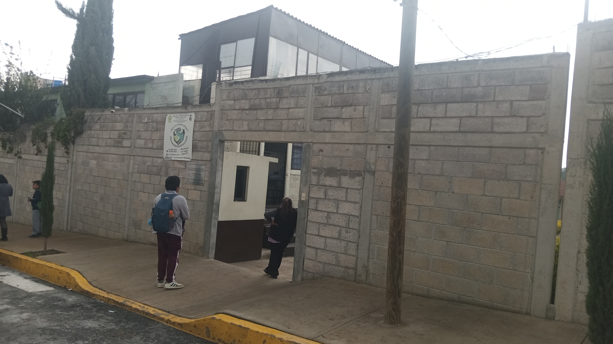

Fotografía tomada en la salida de la escuela, para saber mas de la escuela, la escuela fue construida ya hace tiempo para proveer de educacion a las zonas colindantes como ya se menciono en la pagina principal la escuela forma parte de la asociación UPREZ (Union Popular Revolcionaria Emiliano Zapata), y conmemora la trajedia del año 1968 en Tlatelolco por eso la escuela se llama "2 de Octubre" la escuela siempre ha sido de ideas socialistas, en busca del benefeicio de todos, aunque eso ha sido complicado, pese a todo ha seguido una trayectoria aunque no la mejor pero con ideales presentes, o eso me gusta pensar...